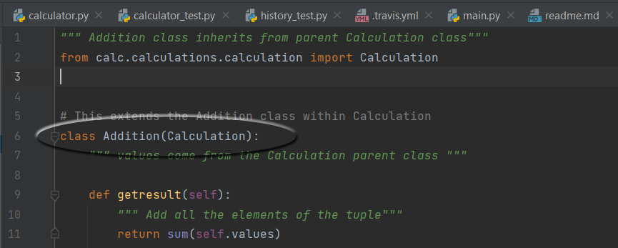
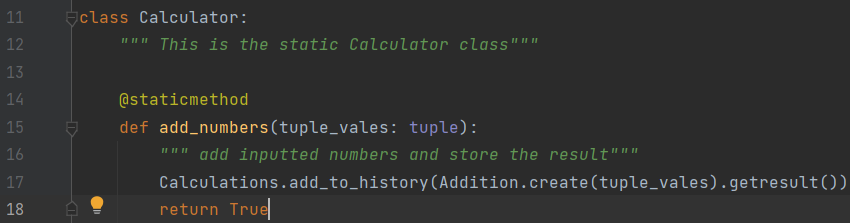
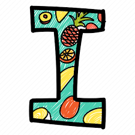
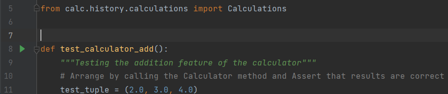
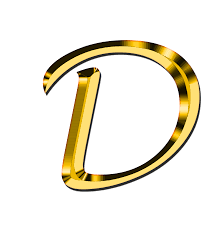
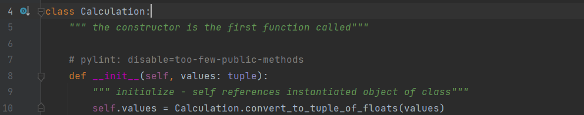

S - Single Responsibility Principle
"There should never be more than one reason for a class to change."
This principle means that each class is responsible for only one thing. If a class has more than one
responsibility, it becomes coupled, and changes to one responsibility results in a modification of other
responsibilities. It also helps with organizing your code. The Façade pattern is a useful layer class
that aggregates all related methods.tract class, and an abstract method can be used as a blueprint to
create methods for child
classes.

In the Python Calculator program, this principle is revealed in the Addition class, which only
performs a single function for the calculator.
Click
here to access the source code.
O - Open-Closed Principle
"Software entities ... should be open for extension, but closed for modification."
Classes and other entities should be open for extension, but closed for modification. You should be able
to add functionality, without touching existing code for the class. This helps to stop you from
modifying (and potentially damaging) existing code. One way this can be achieved is with abstraction.
Once the base class is closed for modification, additions and changes can be done through subclasses.

In the Python Calculator program, this principle is revealed in the Calculator class, which itself is
a facade. It does nothing itself, only calling other functions to do the work.
Click
here to access the source code.
L - Liskov Substitution Principle
"Functions that use pointers or references to base classes must be able to use objects of derived
classes without knowing it."
This principle states that subclasses should be replaceable with their parent class. In other words,
objects should be replaceable with instances of their base types without altering the functionality of
the program. In this way, you should be able to use a class’s subtype indistinguishably, without
compromising its expected behavior. Users are therefore isolated from any changes in class hierarchy.
One core trait is polymorphism.
In the Python Calculator program, Addition is just one child class of the Calculation class. The
instantiation of the object is handled by its parent.
Click
here to access the source code.
I - Interface Segregation Principle

“Many client-specific interfaces are better than one general-purpose interface.”
This principle ensures that users don’t have to rely on methods they don’t use. Segregation means
keeping things separate. One way of doing this is with separation through multiple inheritance. This
principle addresses the disadvantages of implementing big interfaces. It also makes it easier for you to
understand, test and implement your code.

In the Python Calculator program, the testing classes are broken in two: one for testing mathematical
calculations, and one for testing methods associated with the Calculations history variable.
Click
here to access the source code.
D - Dependecy Inversion Principle

"Depend upon abstractions, [not] concretions."
High-level modules shouldn’t depend on low-level modules. They both should depend on abstractions. You
can use interfaces to define high-level abstractions, which the details then implement. Eventually, your
program will be composed only of modules. To create specific functionality, you can use inheritance or
interfaces. Reorganize your dependencies to depend on these interfaces instead of only using concrete
classes.

In the Python Calculator program, The parent class Calculation does not depend on its children, and
unlimited functionality can be put under this class as a subclass.
Click
here to access the source code.